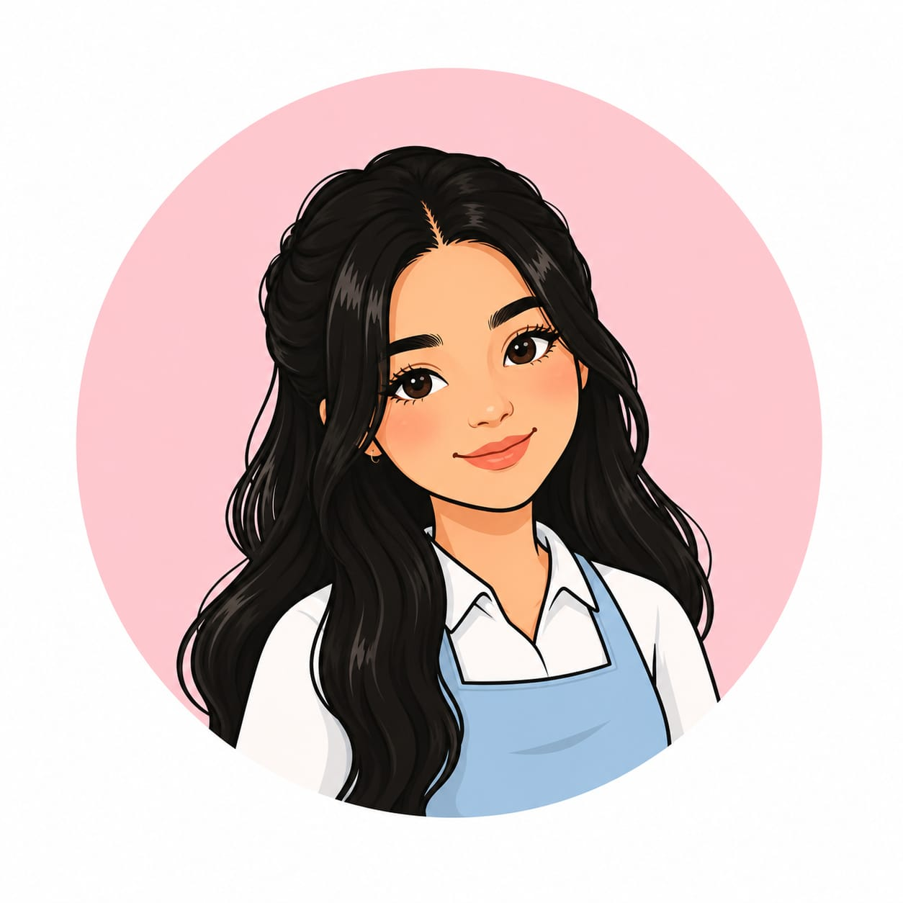

¡Hola! soy Tatiana. Grato nace de un sueño de convertir una pasión en una forma de compartir amor y gratitud. Cada receta, cada detalle y cada creación reflejan el deseo de llevar momentos dulces a la vida de las personas.
Creemos firmemente en que los mejores momentos y recuerdos suelen estar acompañados de algodelicioso. Más que postres, queremos entregar pequeñops detalles que conecten corazones y generen sonrisas.
Porque en Grato, cada bocado es uan forma de decir "gracias" y cada creación es un recordatorio de que la vida esta llena de momentos que merecer ser celebrados.